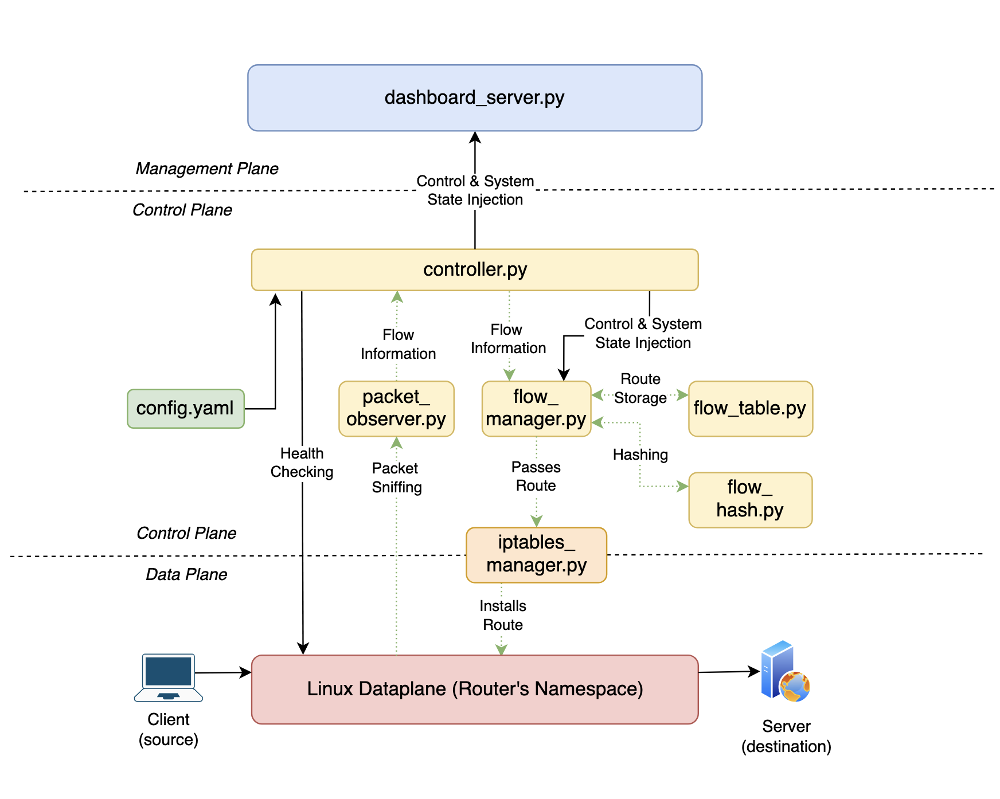
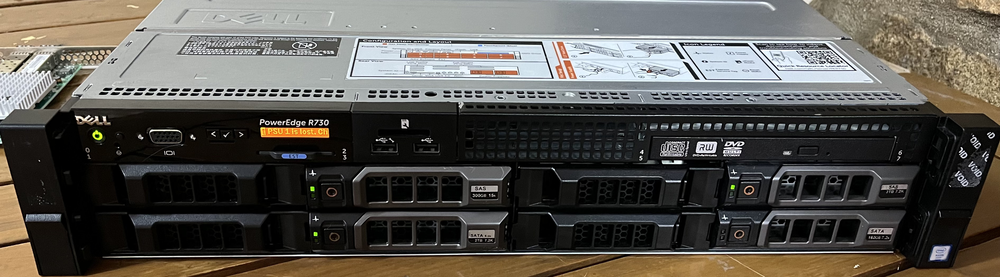

NEPTUNE IPv6 Multihoming Protocol Stack
2025 • Communication systems, protocol design, dissertation

Engineering beyond the theory.
Telecommunications Engineering student at ICAI (Comillas) with hands-on experience in network engineering, infrastructure design and energy systems integration.
I approach engineering as a systems discipline: understanding how network, compute and energy layers interact rather than treating them as separate pieces. Most of my work has grown out of real constraints — unreliable connectivity, limited infrastructure, or unstable power — and has evolved into production-like deployments that must keep running outside the lab.
This portfolio brings together three main threads: network architectures (IPv6 multihoming, point-to-point backhaul links), infrastructure platforms (virtualization, storage and backup design with Proxmox and ZFS), and energy systems (a 17 kWp PV + storage system with backup capabilities). I am particularly interested in reliability engineering and long-term maintainability, where protocol design, hardware choices and operational practices all need to align.
Independent engineering projects with focus on networks, distributed systems, and energy integration.

2025 • Communication systems, protocol design, dissertation

2025 • Energy systems, PV design, Victron ESS, Storage

2024 • WiFi 7, UniFi, structured cabling
2021–ongoing • Virtualization, ZFS, backups

2020–2021 • RF planning, routing, connectivity